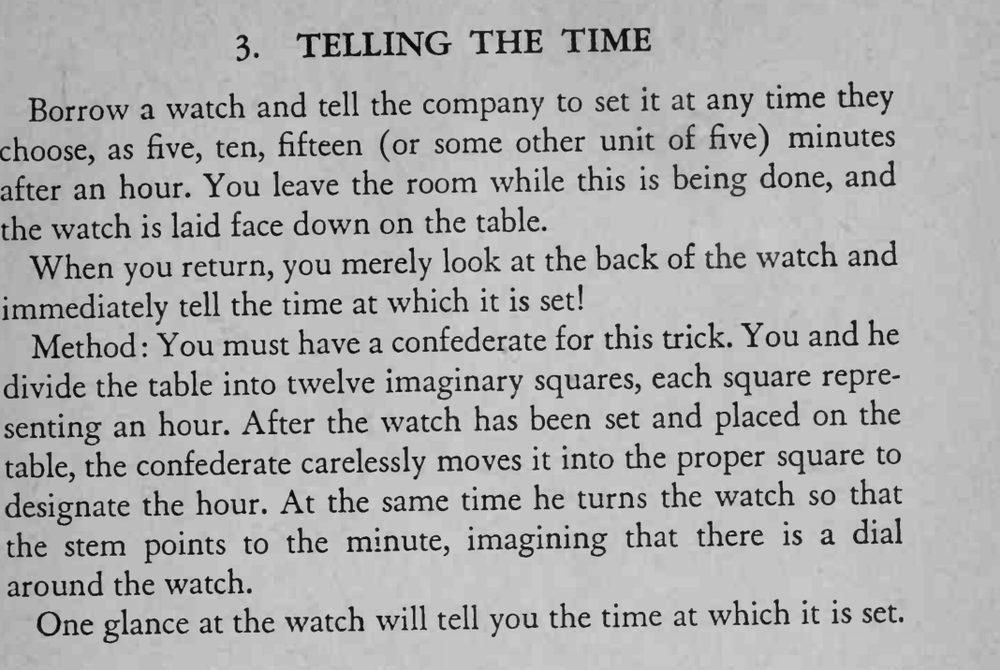

观众把表拨到任意带五点的时间并扣在桌上，魔术师只看表背就说出时间。
十二格的位置与表冠指向的约定要事先练熟，同伙移动时要装得随意。

Borrow a watch and tell the company to set it at any time they choose, as five, ten, fifteen (or some other unit of five) minutes after an hour. You leave the room while this is being done, and the watch is laid face down on the table. When you return, you merely look at the back of the watch and immediately tell the time at which it is set! Method: You must have a confederate for this trick. You and he divide the table into twelve imaginary squares, each square representing an hour. After the watch has been set and placed on the table, the confederate carelessly moves it into the proper square to designate the hour. At the same time he turns the watch so that the stem points to the minute, imagining that there is a dial around the watch. One glance at the watch will tell you the time at which it is set.